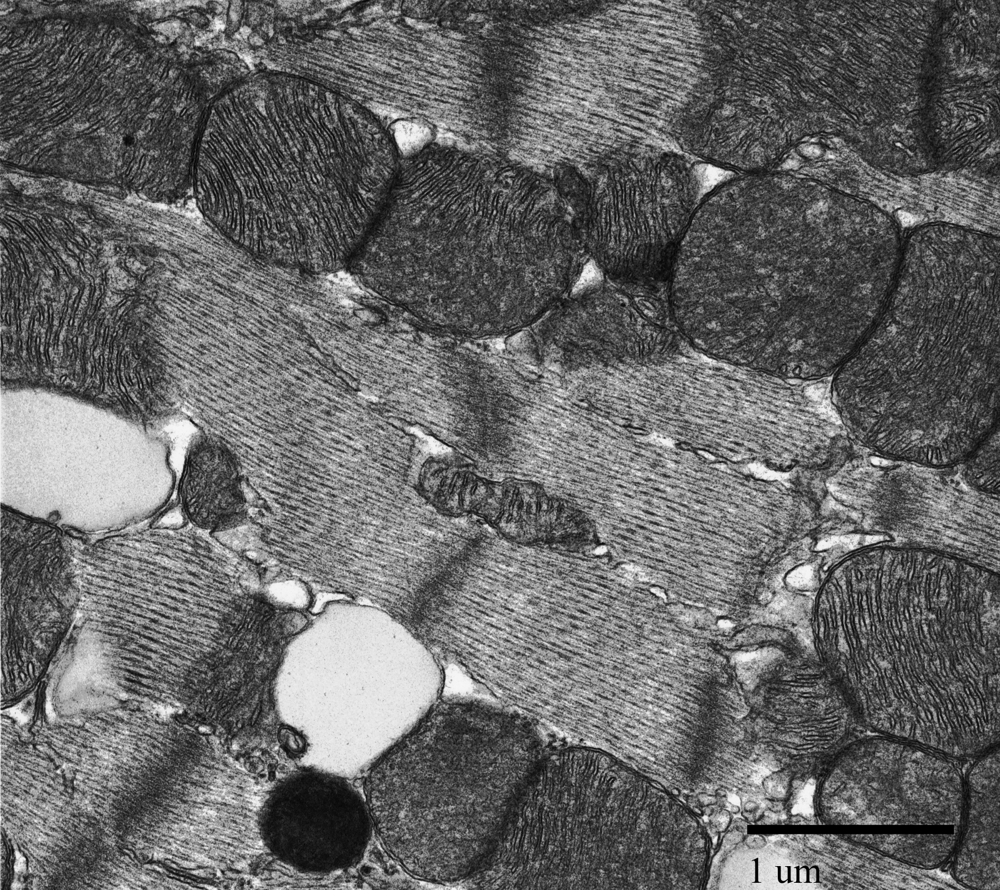
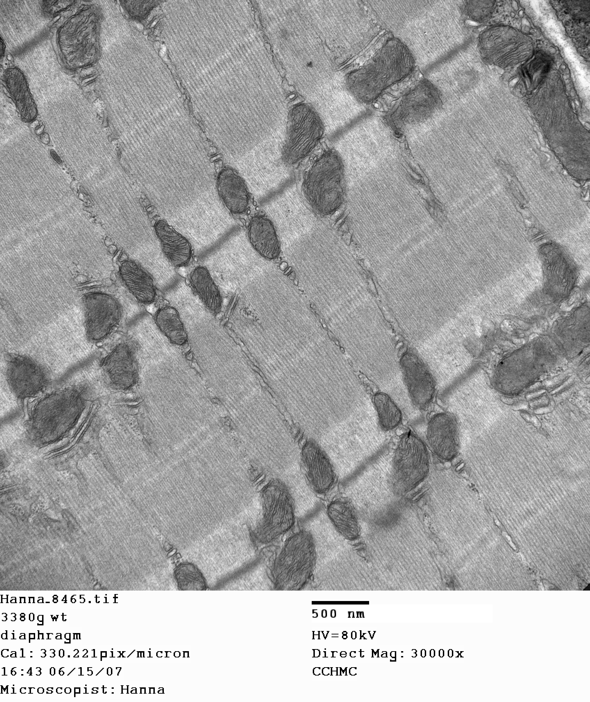
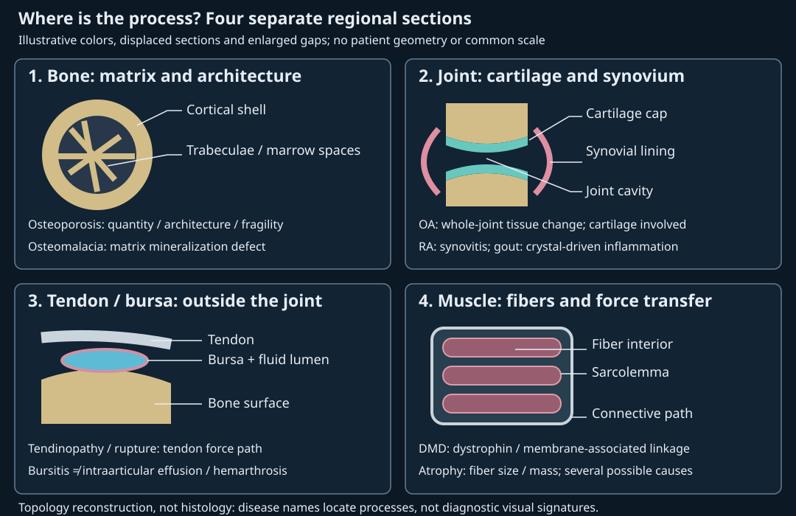

15. Muscle contraction and neuromuscular transmission
A hand loses its ability to hold a load even though a motor nerve still conducts impulses. The failure could lie in transmitter release, muscle excitation, calcium regulation, force generation or the connective path carrying force. “Weakness” does not locate the defect. Following a signal across named compartments makes those alternatives distinguishable.
This chapter follows official lectures 33–35. The running case is an idealized nerve–skeletal-muscle preparation: a nerve stimulus, a muscle-membrane voltage measurement and a force measurement are available. The causal sequence is nerve action potential → transmitter release → endplate current → muscle action potential → intracellular calcium rise → cross-bridge force → transmitted load. These are distinct measured objects, not interchangeable definitions of contraction. The equations below are original teaching constructions with selected inputs, rather than fits to a person or to the lecture cartoons.
15.1 Muscle types and contractile organization L33 01:17
Muscle tissue contains specialized cells that generate active force using chemical energy. Force can stabilize posture without visible movement, change organ volume, propel contents or perform external work. ATP, adenosine triphosphate, supplies free energy to molecular motors and ion transport; part of the energy ultimately becomes heat. Myology is the study of muscle. Counting named muscles depends on anatomical convention; a count is not needed to explain their function.
Striation means a repeating banded microscopic appearance. It classifies structure. Voluntary control describes access through conscious motor commands, not whether each contraction is consciously selected: skeletal muscle also participates in reflexes. Cardiac and smooth muscle have intrinsic and local regulatory processes as well as autonomic modulation. There is no obligatory sensory nerve → spinal cord → brain → muscle route for every muscular event.
| Type | Cell organization | Principal regulatory distinction |
|---|---|---|
| Skeletal | Long multinucleated fibers; aligned sarcomeres produce striation. | Somatic motor neurons normally initiate excitation; calcium regulates thin-filament access through troponin. |
| Cardiac | Branched striated cells, usually one central nucleus; intercalated discs join neighboring cells. | Electrical coupling supports coordinated activity; calcium entry triggers additional SR calcium release. |
| Smooth | Spindle-shaped cells, normally a single central nucleus; no sarcomeric band pattern. | Calcium–calmodulin activates myosin light-chain kinase; myosin phosphorylation regulates cycling. |
In cardiac muscle, intercalated discs contain mechanical junctions, including desmosomes and adherens junctions, and electrical gap junctions. Gap junctions provide intercellular channels supporting current spread. Repeated cardiac activity includes relaxation between contractions; it is not continuous shortening. Action-potential and twitch durations depend on species, cell type, temperature and loading, so a universal cardiac-to-skeletal duration ratio is not used. The owning cardiac-muscle account establishes these cellular distinctions.
Smooth muscle occurs in many vascular and hollow-organ walls, including intestine, bladder and airways, and in specialized ocular muscles. Calmodulin is a calcium-binding regulatory protein; the calcium–calmodulin complex activates myosin light-chain kinase, an enzyme that transfers phosphate from ATP to a myosin light chain. This phosphorylation changes motor regulation. Single-unit smooth muscle emphasizes electrical coupling and coordinated behavior; multiunit smooth muscle emphasizes more independently controlled cells. These are useful organizational tendencies rather than an invariant two-bin map of every vessel and airway. Single-unit smooth muscle is the better answer to the L33 closing comparison with cardiac muscle because both can coordinate activity through gap junctions. It remains nonstriated and uses myosin phosphorylation rather than the troponin switch. See the smooth-muscle reference.
Cardiac muscle can oxidize circulating lactate as fuel; lactate is not merely a discarded metabolic endpoint. In Gertz and colleagues’ human isotope study, myocardial lactate oxidation increased during moderate exercise in trained men. This supports a substrate-use mechanism under that protocol, not a universal rate for every age or disease. It also avoids confusing cardiac lactate use with the source caption’s switched skeletal-muscle subject.
From whole muscle to a molecular motor L33 04:27
A whole skeletal muscle contains bundles called fascicles. Each fascicle contains muscle fibers, which are individual elongated cells. A fiber contains parallel myofibrils; each myofibril contains repeated sarcomeres, contractile units arranged in series. Sarcomeres contain myofilaments. A fiber, a myofibril and a filament therefore identify different levels, and a sarcomere is not a cell. Figure 15.1A shows repeated sarcomeric bands within myofibrils in a fixed mouse cardiac specimen; the larger skeletal-muscle hierarchy is established by the anatomy description and cited skeletal-muscle source.
Epimysium surrounds a whole muscle, perimysium surrounds a fascicle and endomysium surrounds individual fibers. These are connective-tissue sheaths, not three nested cell membranes. The fiber's plasma membrane is the sarcolemma, internal to its endomysial environment. Its cytoplasm is sarcoplasm. The sarcoplasmic reticulum, abbreviated SR, is an intracellular membrane system enclosing a calcium-rich lumen. The SR membrane separates that lumen from muscle cytosol. Tendon and connective sheaths carry force toward skeletal attachments. The skeletal-muscle reference supports the hierarchy and boundaries.
Thin filaments contain polymerized actin together with regulatory proteins troponin and tropomyosin. Thick filaments contain many myosin molecules. A skeletal-muscle myosin molecule has a coiled tail and two motor heads; a whole thick filament does not have just two heads. Each motor head can interact with actin and bind and hydrolyze ATP. The approximate molecular count mentioned in the source is not used as an invariant parameter. Our preparation can therefore have normal electrical signals but reduced force if its contractile or force-transmission apparatus is damaged.




15.2 Neuromuscular transmission crosses two cell membranes L34 01:28
A neuromuscular junction, or NMJ, is the specialized synapse between a motor-neuron terminal and a skeletal-muscle fiber. The presynaptic terminal belongs to the neuron. The motor endplate is specialized postsynaptic muscle sarcolemma with junctional folds and concentrated acetylcholine receptors. It is not the expanded axonal bulb. The extracellular synaptic cleft separates the cells and contains basal-lamina extracellular matrix. The terminal lacks a myelin wrapping at the release site but is associated with terminal Schwann cells; absence of myelin does not imply absence of glia.
Figure 15.2 follows the transmission sequence without collapsing compartments. We will distinguish five spaces throughout: terminal cytosol, synaptic-vesicle lumen, extracellular cleft, muscle cytosol and SR lumen. The cleft communicates with extracellular fluid. The vesicle lumen is inside a membrane-bounded organelle within the nerve terminal. The SR lumen is inside another organelle within another cell. An arrow saying “calcium enters” is incomplete until its source, destination and intervening membrane are named.
Synthesis and vesicle filling use different energy couplings L34 09:49
Acetylcholine, ACh, is the transmitter released by ordinary somatic motor terminals. In terminal cytosol, choline acetyltransferase, ChAT, transfers an acetyl group from acetyl-coenzyme A to choline, producing ACh and coenzyme A. Acetyl-CoA is a substrate, not an enzyme. Mitochondrial metabolism supports precursor and energy supply, but mitochondria are not the site of the ChAT reaction as depicted by one source label. Choline uptake uses a high-affinity transporter, rather than a surface receptor allowing unrestricted diffusion.
New ACh must then cross the vesicle membrane. A vacuolar H+-ATPase spends ATP to pump protons from terminal cytosol into vesicle lumen. The resulting proton electrochemical gradient powers the vesicular acetylcholine transporter, VAChT: coupled proton movement from lumen back to cytosol supports ACh accumulation from cytosol into lumen. “Outside the vesicle” here still means inside the neuron. Proton exit is not an arrow into the synaptic cleft. This is secondary active transport because the transporter draws on a gradient maintained by a primary ATP-driven pump. The Basic Neurochemistry synthesis/storage account supports ChAT and proton-dependent loading; indexed passages were accessible, while direct Bookshelf retrieval was challenged.
A thermodynamic check separates concentration from energy. For an original ideal dilute model, let \(c_1,c_2\) be concentrations of a neutral solute before and after transfer, \(R=8.314462618\) J mol⁻¹ K⁻¹ the molar gas constant and \(T\) absolute temperature in kelvin. The reversible chemical work per mole is \(RT\ln(c_2/c_1)\). For a charged species of valence \(z\), add \(zF(\psi_2-\psi_1)\), where \(F=96485.33212\) C mol⁻¹ and \(\psi\) is electrical potential in volts. Thus a concentration ratio alone cannot determine VAChT energetics: ACh and protons are charged, the membrane voltage matters and coupling stoichiometry must be specified. As a concentration-only reference, a selected 100-fold accumulation at 310 K costs 11.870 kJ/mol. This calculation is not a measured vesicle ratio, transporter efficiency or proof of a particular H+:ACh stoichiometry.
An arriving nerve impulse triggers membrane fusion L34 20:19
An action potential, AP, is a regenerative membrane-voltage event supported by voltage-dependent ion conductances. Sodium-channel opening permits sodium entry; channels are not ATP-driven sodium pumps. Depolarization reaching the terminal opens voltage-gated calcium channels. Calcium flows from extracellular fluid into terminal cytosol near release sites. Calcium sensors, including synaptotagmin in fast synchronous release, cooperate with a primed membrane-fusion apparatus. Vesicular synaptobrevin/VAMP and terminal-membrane syntaxin and SNAP-25 are SNARE proteins, components of that apparatus. Calcium is not adequately represented as a generic crosslink pulling an arbitrary distant vesicle into a membrane.
Exocytosis joins vesicle and terminal membranes, opening communication between vesicle lumen and cleft so that ACh is released extracellularly. This is controlled membrane fusion, not a vesicle explosively rupturing into terminal cytosol. Recycling restores membrane and vesicle supply through additional steps outside the animation. The synaptotagmin-2 knockout study in mice supplies direct neuromuscular evidence for calcium-triggered release regulation; it does not set the durations of our schematic phases. The primary Schiavo and colleagues SNARE-cleavage study used biochemical preparations including rat synaptic proteins and distinguished toxin serotypes targeting SNAP-25 from those targeting VAMP. Its abstract provides mechanistic perturbation evidence; it is not a human dose-response experiment.
Static sequence: nerve AP → terminal calcium entry → vesicle fusion → cleft ACh → muscle nAChR current/EPP → muscle AP toward both fiber ends → cleft ACh hydrolysis. Terminal cytosol, vesicle lumen, extracellular cleft and muscle cytosol are separate spaces.
A graded endplate potential can trigger a regenerative muscle impulse L34 27:01
ACh binds muscle nicotinic acetylcholine receptors, nAChRs, opening ligand-gated cation channels. They carry both inward sodium and outward potassium currents under ordinary resting conditions. The net endplate current is inward at a negative resting voltage. It is not evidence that the receptor is sodium-selective. The endplate potential, EPP, is the resulting local graded depolarization; its size varies with release, receptor availability and electrical properties. A threshold is the condition at which nearby voltage-gated sodium-channel activity becomes regenerative. An EPP is therefore neither a universal −55 mV voltage nor another name for threshold.
The University of Texas NMJ account distinguishes the mixed-cation response, EPP and AP. Purves and colleagues explain how current reversal near zero voltage exposes the mixed conductance. We can test the logic without a full channel model. Let \(g_{\rm ACh}\ge0\) denote aggregate receptor conductance in siemens, \(V_m\) muscle voltage and \(E_{\rm ACh}\) its reversal voltage, both in volts. With outward current positive, \(I_{\rm ACh}=g_{\rm ACh}(V_m-E_{\rm ACh})\). Selected \(g_{\rm ACh}=1\) µS, \(V_m=-90\) mV and \(E_{\rm ACh}=0\) mV yield −90 nA, an inward current. At reversal the net current is zero even though opposite ionic fluxes need not each vanish.
To see why receptor loss can defeat excitation, use a lumped passive patch before AP initiation. Let \(C_m\) be its capacitance in farads, \(g_L>0\) its leak conductance and \(E_L\) leak reversal voltage. Conservation of charge gives
\[C_m\frac{dV_m}{dt}=-g_L(V_m-E_L)-g_{\rm ACh}(V_m-E_{\rm ACh}).\tag{15.1}\]Holding both conductances constant makes the equilibrium a conductance-weighted average, \(V_\infty=(g_LE_L+g_{\rm ACh}E_{\rm ACh})/(g_L+g_{\rm ACh})\), with time constant \(\tau=C_m/(g_L+g_{\rm ACh})\). The solution is \(V_m(t)=V_\infty+[V_m(0)-V_\infty]e^{-t/\tau}\). The inward receptor current initially charges the capacitance; leak and receptor currents eventually balance. For synthetic \(C_m=10\) nF, \(g_L=1\) µS, \(E_L=-90\) mV, \(E_{\rm ACh}=0\), and an illustrative threshold −55 mV, \(g_{\rm ACh}=1\) µS gives \(V_\infty=-45\) mV and \(\tau=5\) ms. Starting at −90 mV reaches the selected threshold after 7.520 ms. With receptor conductance reduced to 0.5 µS, equilibrium is −60 mV and threshold is never reached in this model.
These are selected circuit values, not a human EPP recording or physiological synaptic latency. A brief conductance pulse may end before threshold; a spatially distributed fiber adds cable effects; voltage-gated channels invalidate the passive equation after AP onset. The computation demonstrates a conditional mechanism for transmission failure. It does not estimate a patient's safety factor.
The muscle AP spreads along sarcolemma and into transverse, or T, tubules, invaginations whose lumen remains extracellular. With an endplate near a fiber's middle, excitation spreads away toward both ends. Refractoriness behind each advancing front suppresses immediate local re-excitation; it does not convert the centrally initiated two-front geometry into propagation toward only one end. Potassium efflux and sodium-channel inactivation contribute to repolarization. ATP-dependent ion pumps maintain gradients over repeated activity, rather than directly opening every AP channel.
Termination and perturbations locate different failures L34 35:56
Acetylcholinesterase, AChE, hydrolyzes cleft ACh to choline and acetate, limiting receptor activation. Choline can be transported back into the terminal and reused; whole-ACh uptake is not the principal recycling step described here. This extracellular termination is distinct from removing calcium from muscle cytosol. AChE inhibition can produce excess cholinergic stimulation and eventually weakness through persistent depolarization and receptor dysfunction; “more ACh” does not imply indefinitely more useful force.
| Perturbation | Direct process affected | Inference in the ideal preparation |
|---|---|---|
| Curare-type competitive antagonism | Postsynaptic nAChR activation. | Nerve AP and release can persist while EPP becomes inadequate. |
| Botulinum neurotoxins | Serotype-dependent cleavage of presynaptic SNARE components. | Release is impaired; this mechanism produces flaccid weakness, not spasms from “too little ACh.” |
| Tetrodotoxin | Susceptible voltage-gated sodium channels. | AP initiation/propagation can fail; this differs from receptor antagonism. |
| Conotoxins | Class- and subtype-dependent targets: selected α toxins antagonize nAChRs, selected ω toxins inhibit calcium channels, selected µ toxins inhibit sodium channels. | A family name alone cannot locate the block. |
| Organophosphates inhibiting AChE | Cleft transmitter breakdown. | Persistent transmitter action differs from blocked synthesis or release. |
| Myasthenia gravis | Autoimmune disruption of postsynaptic organization/function. | Transmission can fail during activity despite an intact contractile apparatus. |
The endplate-receptor mechanistic account supports curare-type and selected α-conotoxin antagonism; the NLM conotoxin classification distinguishes α, ω and µ examples without exhausting modern conotoxin diversity. Botulinum-B synaptobrevin cleavage was demonstrated in biochemical and Aplysia neuronal experiments. Those preparations establish molecular targets, not interchangeable toxin pharmacology or doses.
In myasthenia gravis, receptor-directed antibodies are common, but not every case is an antibody physically blocking an ACh site. Antibodies can reduce receptor availability or injure the postsynaptic membrane; other patients have antibodies to muscle-specific kinase, MuSK, a protein needed for receptor organization. The owning NHS laboratory account supports this distinction. It does not justify self-diagnosing fatigability or selecting a treatment from the diagram.
Low extracellular ionized calcium, hypocalcemia, has more than one relevant effect. Calcium entry supports nerve-terminal transmitter release, yet systemic hypocalcemia can increase neuromuscular irritability and cause tetany. Reduced release in a constrained synaptic experiment and increased excitability in a person are not contradictory statements about the same isolated variable. Endotext's clinical account supports the latter. Excess extracellular magnesium, hypermagnesemia, can suppress calcium-dependent release and cause weakness and reduced reflexes; the magnesium-toxicity account supports the clinical mechanism. Neither serum calcium nor magnesium directly substitutes for the separate skeletal SR store.
Temperature and pH affect channel, enzyme and protein behavior, but a broad laboratory range is not a safe systemic target. The source's 30–40 °C and pH 7–8 wording is not used as a human operating specification. Likewise, structural and functional NMJ plasticity does not imply that an acute complete toxin block can be trained away. The closing L34 perturbation question is answered in Problem 1: receptor block and release block have different proximal signatures despite a common downstream failure.
15.3 Excitation becomes force through intracellular calcium regulation L34 32:30
Figure 15.3 separates the intracellular release path from synaptic release. A triad places a T tubule between two enlarged SR regions called terminal cisternae. The tubule and SR are adjacent membrane systems, not one continuous lumen. In ordinary adult skeletal excitation–contraction coupling, depolarization changes the conformation of CaV1.1, the T-tubule voltage sensor also called the dihydropyridine receptor. Coupling to RyR1, the SR calcium-release channel, opens a path from SR lumen into muscle cytosol. The CaV1.1 mechanistic account explicitly distinguishes voltage sensing from calcium influx. A calcium ion crossing the nerve-terminal membrane in §15.2 and an ion leaving the muscle SR here cross different membranes in different cells.
The primary Perni, Lavorato and Beam reconstitution experiment expressed skeletal coupling proteins in tsA201 cells, a heterologous human-derived cell line rather than intact human muscle. Depolarization induced intracellular calcium transients without requiring extracellular calcium entry. This supports conformational coupling; it does not establish every molecular contact or make extracellular calcium irrelevant to long-term muscle homeostasis. Cardiac muscle instead relies on entering calcium to trigger RyR2-mediated calcium-induced calcium release. Importing that trigger into the skeletal scheme would erase the important distinction.
Troponin C is the calcium-binding component of the thin-filament troponin complex. Calcium binding changes regulation by troponin and tropomyosin, making productive actin–myosin interaction more likely. Calcium regulates access; it does not supply the energy consumed by myosin. When release subsides, SERCA, the sarco/endoplasmic-reticulum calcium ATPase, spends ATP to move calcium from muscle cytosol back into SR lumen. Buffering and other transport also influence the transient. AChE terminates extracellular transmitter action; SERCA helps terminate the intracellular calcium signal. Neither is a substitute for the other.
Static sequence: T-tubule depolarization → CaV1.1/RyR1 coupling → SR calcium release → troponin regulation → cross-bridge cycling. A separate reset uses SERCA to move calcium cytosol → SR and ATP binding to detach actomyosin.
A chemical cycle changes mechanical attachment L33 17:19
A cross-bridge is an interaction between a myosin motor head and actin. An instructive cycle can start from strongly bound actomyosin with no nucleotide at the motor's ATP site. ATP binding reduces actin affinity and permits detachment. Hydrolysis produces ADP, adenosine diphosphate, and inorganic phosphate, \(P_i\), while the detached head adopts a primed conformation. It can interact with available actin sites. Transition toward strongly bound force-bearing states is coupled to product release and the working stroke; ADP is then released, leaving a strongly bound state until a new ATP binds. A biochemical cycle does not require a new nerve impulse for every head turnover.
This is a coarse mechanochemical description. It does not assign a universal sequence of resolvable microscopic substates or an experimentally measured phosphate-release delay. Heads cycle asynchronously, and load and isoform affect the transitions. The contraction reference establishes ATP-dependent detachment, hydrolysis and sliding. Its schematic does not supply a measured kinetic trajectory for our animation. Without ATP, strongly bound cross-bridges cannot detach normally: ATP depletion is not a convenient physiological relaxation command.
Additional proteins connect local motors to a stable structure. Alpha-actinin crosslinks actin at Z discs. Titin extends from the Z-disc region toward the M-line region and supports thick-filament alignment and passive mechanics. Nebulin associates along skeletal thin filaments and contributes to their organization and length regulation. Dystrophin links a subsarcolemmal actin cytoskeleton to a membrane-associated protein complex and extracellular matrix. This lateral force-transmission system does not mean that every individual thin filament ends directly on sarcolemma. Its failure provides a bridge to Duchenne muscular dystrophy in §15.4. The sarcomeric cytoskeleton account supplies structural context; original nebulin-knockout mouse experiments connect thin-filament organization to reduced contractile function without establishing one immutable ruler mechanism for every species.
Sliding shortens the sarcomere while preserving filament lengths L33 21:38
A sarcomere extends from one Z disc to the next. The A band spans the thick filaments, including their overlap with thin filaments. The I band is the thin-filament-only region crossing a Z disc between neighboring sarcomeres. The H zone is the central thick-filament-only region; the M line lies centrally and organizes the thick filaments. Optical appearance depends on preparation and modality. Thick-only does not mean “the darkest possible region,” and overlapping filaments do not fuse.
Figure 15.4 implements an original one-dimensional geometry that makes the constraints inspectable. Put the M line at coordinate zero. Let \(L\) be Z-to-Z sarcomere length, \(a\) thin-filament length on each side and \(b\) thick-filament length, all in micrometers. Z discs are at \(\pm L/2\), the thick filament occupies \([-b/2,b/2]\), and the left thin filament occupies \([-L/2,-L/2+a]\), with a reflected right filament. Assume centered thick filaments, symmetric sliding and fixed finite positive \(a,b\). For the following band-width formulas, restrict finite length to \(\max(b,2a)\le L\le b+2a\). The lower bound avoids thick-filament intrusion beyond Z discs and opposing thin-filament overlap across the center. The upper bound excludes filament-free gaps between thin tips and thick ends. At the upper endpoint the overlap is zero, and the H zone occupies the full A band. Within this restricted domain,
\[A=b,\qquad I_{\rm total}=L-b,\qquad H=\max(0,L-2a),\qquad O=\max\!\left(0,\min\!\left[a,\frac{b+2a-L}{2}\right]\right).\tag{15.2}\]Here \(I_{\rm total}\) is the sum of the two thin-only edge regions within one sarcomere, equivalent to one full I-band width in a repeating lattice, and \(O\) is overlap on one side. The H-zone formula follows because thin-filament tips end at \(\pm(L/2-a)\); subtracting those coordinates gives \(L-2a\), truncated when that gap closes. The overlap formula is the intersection length of the two relevant intervals. It is geometric overlap, not a force law.
For selected \(a=1.0\) µm and \(b=1.6\) µm, changing \(L\) from 2.6 to 2.2 µm preserves the 1.6-µm A band. Total I width changes from 1.0 to 0.6 µm, H width from 0.6 to 0.2 µm and overlap per side from 0.5 to 0.7 µm. Sarcomere shortening is 15.385%. Neither filament gets shorter. At extreme shortening, opposing thin-filament interference and thick-filament contact with Z regions invalidate a simple overlap-to-force inference; at large extension overlap disappears.
A bounded force–length and recruitment investigation
Geometric overlap is an opportunity for cross-bridge interaction, not a force measurement. In Gordon, Huxley and Julian's original frog-fiber experiments, active isometric tetanic tension varied with sarcomere length; a plateau and a descending limb were consistent with sliding-filament organization. Their experimental length control matters: nonuniform local sarcomere lengths can confound a whole-fiber inference. The following construction isolates the long-length limb and does not fit their data or transplant frog measurements into a person.
A motor unit consists of one motor neuron and all the muscle fibers it innervates. Define a synthetic preparation of \(N=10\) parallel, equally strong motor units. Let \(n\in\{0,\ldots,10\}\) be the number recruited, meaning switched into the active set; \(q=n/N\) is the recruited fraction. Within each recruited unit, activation is held at one fixed reference level; inactive units contribute zero. Let \(F_*=100\) N be the selected maximum active force of all ten units at reference sarcomere length \(L_*=2.2\) µm. Equal unit strength, additive parallel forces and a shared sarcomere length are modeling assumptions. Actual units differ in size and discharge properties. Henneman, Somjen and Carpenter's primary cat study linked recruitment thresholds to motor-neuron size in a specified stretch-reflex preparation, with exceptions. It supports distinguishing recruitment from force per unit, not replacing the measured ordering with our ten identical units.
For \(2.2\le L\le3.6\) µm, use the one-sided overlap \(O(L)\) from equation (15.2), with \(a=1.0\), \(b=1.6\) µm and \(O_*=O(L_*)=0.7\) µm. Define a selected dimensionless length factor \(\phi(L)=\min[1,O(L)/O_*]\). Assume force capacity is proportional to this overlap factor on the chosen long-length limb. Summing \(n\) equal contributions of \((F_*/N)\phi(L)\) then gives
\[F_{\rm active}(L,n)=\sum_{j=1}^{n}\frac{F_*}{N}\phi(L)=qF_*\phi(L).\tag{15.3}\]The geometric calculation supplies \(O\); proportional force capacity and equal motor-unit addition are separate constitutive choices. At \(L=2.6\) µm, \(\phi=5/7=0.714286\), so two, six and ten recruited units produce selected active forces 14.286, 42.857 and 71.429 N. At \(L=2.2\) µm, six units produce 60.000 N. At \(L=3.6\) µm, overlap and this model's active force vanish even with all ten units recruited. Recruiting more units cannot create filament overlap that is absent.
Figure 15.4 prescribes \(L(s)=2.6-0.4s\) µm for dimensionless presentation phase \(0\le s\le1\). Geometry, length trace and force trace use that same state and the selected recruited count. Each point is a quasi-static active-force capacity at its imposed length; connecting them is a presentation sequence, not the measured tension during shortening. Force–velocity effects, force history, passive titin/connective tension, calcium kinetics, rate coding, fatigue, heterogeneous motor units, tendon compliance and pennation (fiber angle relative to the force-transmission direction) are omitted. The construction therefore implements the recruitment/force–length learning objective without pretending to solve the running preparation's dynamics. Its active force is not total measured tension and its ten-second playback is not a physiological contraction time.
Print endpoints: L=2.6 → 2.2 µm; A=1.6 → 1.6 µm; total I=1.0 → 0.6 µm; H=0.6 → 0.2 µm; one-sided overlap=0.5 → 0.7 µm. Filament lengths remain fixed. With six of ten selected units, active force=42.857 → 60.000 N under equation (15.3); passive force and shortening dynamics are omitted.
Force, work and ATP consumption are different quantities
Isometric contraction produces force while overall muscle length is held fixed; molecular turnover and ATP consumption can continue. External mechanical work is zero when the attachment displacement is zero, even though the preparation consumes energy. During shortening under constant external force \(F_{\rm load}\) in newtons through distance \(d\) in meters, work delivered to that load is \(W=F_{\rm load}d\) joules. This is an external work balance, not a claim that every myosin stroke contributes equally to load displacement.
For selected \(F_{\rm load}=20\) N and \(d=0.010\) m, \(W=0.200\) J. Suppose a synthetic whole-preparation accounting efficiency \(\eta=0.25\) is defined as external work divided by ATP free energy consumed, with selected ATP free-energy magnitude \(G_{\rm ATP}=50\,000\) J/mol. Then \(n_{\rm ATP}=W/(\eta G_{\rm ATP})=16.000\) µmol. If all ATP were counted with exact Avogadro constant \(N_A=6.02214076\times10^{23}\) mol⁻¹, this would be \(9.6354\times10^{18}\) molecules. The assumed efficiency aggregates motors, transport and losses; it is not measured muscle efficiency. At isometric length, this formula cannot infer ATP use from zero work because the stipulated work-efficiency relation no longer supplies an independent energy measurement.
A short electrical AP and a longer calcium/force transient need not have identical durations. In skeletal muscle, successive stimuli can arrive after electrical refractoriness ends while mechanical activation remains, allowing twitch summation and, at sufficiently high activation frequency, tetanic force. The source slide's claim that brief refractoriness prevents skeletal tetanus reverses this reasoning. Cardiac refractoriness and coupling differ; a skeletal summation diagram is not a cardiac pacing model. Recruiting additional motor units provides another route to increasing whole-muscle force. Equation (15.3) separates the recruitment input from force per active unit without supplying either mechanism with measured kinetics.
15.4 Tissue-specific disease mechanisms L35 02:00
Return to the hand holding a load. A transmission defect can leave the bones and tendons intact; a tendon lesion can interrupt the load path despite normal electrical activation; pain or joint damage can limit useful movement without primary motor failure. Disease names must therefore identify an affected tissue and process. The following survey preserves the source's breadth while separating mechanism, diagnostic evidence and management. Clinical education sources were checked on 4 November 2026; no dosing or patient treatment algorithm is inferred.
Figure 15.5 locates the tissue processes before assigning disease names. A location diagram can clarify a causal distinction without pretending to show diagnostic pathology.

Low quantity and defective mineralization are different failures L35 04:58
Osteoporosis combines reduced bone mass with structural deterioration and increased fragility. It can be silent until fracture, including at vertebrae, hip or wrist. Age is one risk factor; endocrine disorders, medications such as glucocorticoids and other conditions matter. It is not defined by every matrix packet failing to mineralize. Dual-energy X-ray absorptiometry, DXA, measures site-specific areal bone mineral density and helps assess fracture risk; it does not directly image every trabecular connection. The NIAMS overview and diagnosis/management account distinguish risk, density and fracture prevention. Nutritional adequacy, appropriate loading and fall prevention accompany risk-dependent medication decisions; supplements alone do not reconstruct every damaged architecture.
Osteomalacia means impaired mineralization of bone matrix. Rickets includes defective mineralization at growing plates in children, so growth-plate deformity distinguishes it from adult disease. Vitamin-D or calcium deficiency can cause nutritional disease, while phosphate wasting, malabsorption and metabolic or genetic disorders require different explanations. Pain, weakness and bowed legs are clues in context, not diagnostic labels. Biochemistry and appropriate imaging identify the process; a density result alone cannot distinguish low quantity from poor mineralization. The WHO nutritional-rickets report provides the calcium/phosphate and growth-state distinction. Winter pain alone establishes neither vitamin-D deficiency nor an indication for unrestricted sun exposure.
Degeneration, autoimmunity, crystals and infection L35 07:09
Osteoarthritis is a disease of the joint as an organ, involving cartilage, bone and other joint tissues. “Wear and tear” alone misses biological remodeling and inflammation. Pain during use, stiffness after inactivity and restricted function occur with variable severity. Clinical examination and selected joint imaging serve a different purpose from osteoporosis DXA. The NIAMS mechanism account and management account describe activity/weight-management approaches, symptom-directed medicines and selected joint replacement. Local corticosteroid injection is a scoped intervention; it is not a recommendation for blanket systemic steroids or a cartilage-regeneration claim.
Rheumatoid arthritis, RA, is systemic autoimmune disease centered prominently on synovial inflammation. Persistent inflamed synovium can damage cartilage and bone and alter supporting structures. It cannot be reduced to T cells directly destroying “bone cells.” Often symmetric joint disease and extraarticular effects, including heart or lung involvement, distinguish its pattern from simple local loading damage. Rheumatoid factor and anti-cyclic-citrullinated-peptide antibodies contribute evidence alongside history, examination and imaging; no one test establishes every case. The NIAMS RA account supports this tissue sequence. Disease-modifying management differs from analgesia alone: conventional agents and targeted biological/small-molecule approaches can alter disease activity. The lecture's unverified IL-2-inhibitor list is excluded. RA is neither uniformly fatal nor the only musculoskeletal disease with potentially serious complications.
Gout is inflammatory disease associated with monosodium urate crystal deposition in and around joints. Elevated blood urate increases risk but does not imply that every person develops gout. Identification of crystals in appropriate joint-fluid analysis can supply direct evidence; “too little joint fluid” is not its defining criterion. The NIAMS gout account and diagnostic/management account distinguish flare inflammation from long-term urate management. Injectable hydrogel to lubricate a supposedly dried joint is not an established causal treatment for the crystal process described here.
Osteomyelitis is infection of bone, commonly bacterial but with other infectious causes possible. It can require prolonged organism-directed treatment and selected debridement, surgical removal of infected or damaged tissue. Rapid recovery from generic anti-inflammatory drugs is not an adequate model; systemic infection can be serious. The IDSA native vertebral osteomyelitis guideline is specifically an adult spinal-infection source. Its diagnostic microbiology and treatment principles cannot be relabeled as one universal regimen for every bone infection.
Mechanical displacement and inflammatory axial disease L35 14:39
In a herniated intervertebral disc, internal disc material displaces through or beyond the outer annular boundary and may irritate or compress neural structures. Adjacent discs do not merge. Examination and selected MRI connect structural findings with symptoms; a visible abnormality alone is not the entire diagnosis. The AAOS lumbar-disc account describes improvement without surgery in many patients and surgery for selected circumstances. This rejects both universal surgery-only and universal irreversible-symptom claims.
Scoliosis is a spinal deformity with lateral curvature and a three-dimensional rotational component. Many childhood/adolescent cases are idiopathic, meaning no single cause is established; congenital and neuromuscular causes also occur. Ordinary slouching is not an established universal cause or posture correction a universal cure. The NIAMS scoliosis account and management account distinguish observation, bracing during growth and selected surgery according to the curve and patient context. An anatomical shape alone does not determine the same intervention for every age.
Ankylosing spondylitis, also called radiographic axial spondyloarthritis, is inflammatory disease affecting axial joints and entheses, sites where tendons or ligaments attach to bone. Inflammation and later structural change can produce stiffness and fusion; other organs may be involved. HLA-B27 is a genetic association, not a deterministic diagnosis in every carrier. The NIAMS account supports the distinction between inflammatory activity and established structure. “No cure” does not mean “no useful treatment,” and structural disease is not interchangeable with a herniated disc.
The force-transmission apparatus can fail L35 17:40
Duchenne muscular dystrophy, DMD, usually results from pathogenic variants in the X-linked DMD gene that prevent adequate functional dystrophin production. Loss of that structural linkage makes muscle fibers vulnerable to repeated injury, degeneration and replacement by fat and fibrous tissue. Early weakness commonly involves proximal legs/pelvis; respiratory muscle and cardiac involvement are important later consequences. The brain is not a contractile muscle, and esophagus-first progression is not the defining sequence. X linkage means boys are predominantly affected, while heterozygous girls/women can have manifestations. New variants and variable expression prevent reducing inheritance to one family stereotype.
The NINDS muscular-dystrophy account supports this human disease mechanism and pattern. DMD is not rendered “no longer rare” by an anecdotal impression. Disease-directed therapies, mutation-specific approaches, gene delivery and cell-based research require separate evidence for eligibility, outcomes and harms. The source's counts of available therapies, prices, FDA timing and Indian availability are excluded because lecture-era statements cannot establish current regulatory or access conditions. This preserves the therapeutic research topic without converting it into an undated cure claim.
Muscle atrophy means loss of muscle size; it is a phenotype with multiple mechanisms rather than one untreatable disease. Disuse reduces loading; denervation removes neural input; malnutrition, aging, systemic disease and cachexia, disease-associated wasting, can alter protein balance through different pathways. A smaller muscle can also coexist with impaired activation or altered tendon mechanics. In the running preparation, a force decrease alone cannot distinguish fewer functioning fibers from failed synaptic transmission. The original unilateral leg-suspension study examined disuse in healthy young men and found muscle-size and protein-synthesis changes; its selected experimental setting does not establish every aging or disease trajectory. No blanket exercise or nutrition prescription follows without identifying the cause.
Tendon and bursa pathology lie in different spaces L35 20:26
Tendinitis denotes tendon inflammation; tendinopathy is a broader clinical/pathological term because persistent tendon pain need not be primarily inflammatory. Repetitive loading and acute injury can affect tendons such as rotator cuff, Achilles and elbow-associated tendons. A tendon rupture is structural discontinuity, not a synonym for every painful tendon. Infection introduces another mechanism requiring its own evidence. Bursitis is inflammation of an existing bursa, a fluid-containing cushion between moving tissues, for example around shoulder, hip, elbow or knee. It is not creation of a new water sac because a joint dried out. The NIAMS sports-injury account supplies the tendon/bursa distinction.
A swollen bursa outside a joint differs from joint effusion, excess intraarticular fluid, and hemarthrosis, blood within a joint. Trauma, crystals and infection can create overlapping symptoms while occupying different spaces. Aspiration is withdrawal of fluid for a defined diagnostic or therapeutic purpose; it is not an automatic consequence of seeing swelling. The reported Shoaib Akhtar story is omitted as unverified personal clinical history: no accessed record establishes the fluid compartment, diagnosis or necessity of drainage. The hypothetical football case remains useful precisely because its evidence does not uniquely determine one disease.
A copied causal list does not explain bone tumors L35 23:18
Osteosarcoma is a malignant tumor producing osteoid; chondrosarcoma is a malignant cartilage-forming tumor; Ewing sarcoma is a distinct sarcoma often arising in bone in younger people. A primary bone cancer begins there, whereas a metastasis is spread from another primary site. Adult bone metastases are much more common than primary bone cancer. Imaging locates lesions and guides investigation; biopsy and pathology establish tumor classification. A generic circulating “biomarker” cannot identify every histological type.
The NCI bone-cancer account identifies inherited predispositions, previous radiation and other context-specific risks. It does not support the source slide's repeated bursitis causes—overuse, injury, infection and rheumatoid arthritis—as an established generic cause list for bone cancer. Histology and stage determine whether surgery, chemotherapy, radiation or selected targeted approaches are appropriate. “Immunotherapy is popular” supplies no evidence of a standard treatment for every bone sarcoma. No current approval or efficacy claim is made here, and the unrelated heart-cancer callback is excluded rather than assigned a speculative single cause.
These diseases change different parts of the original causal chain: amount and architecture of bone, mineral quality, articular tissue, synovial immunity, crystal burden, infection, neural compression, cytoskeletal linkage or the external force path. A symptom is a many-to-one output of that chain. Recovering its cause is an inference problem requiring additional observations, as the final worked exercise demonstrates.
15.5 Six worked problems
1. Locate a complete transmission block
A hypothetical preparation has normal nerve APs but no nerve-evoked muscle AP or force. Compare complete nAChR blockade with complete ACh-release blockade. What extra measurements distinguish them? Assume a direct muscle stimulus can activate intact muscle membrane beyond the synapse.
Worked solution
Both interventions interrupt the chain before muscle AP initiation, so the shared endpoint cannot locate the block. With receptor blockade, a cleft ACh measurement can still detect stimulus-evoked release, but the postsynaptic receptor current is absent. With release blockade, evoked cleft ACh is absent; receptors can still respond to appropriately applied ACh in the ideal preparation. Direct muscle stimulation bypasses both lesions and can restore AP/calcium/force if downstream machinery is intact. A preserved direct response therefore locates the failure upstream of the directly stimulated muscle membrane but does not alone separate the two synaptic lesions. This answers both halves of the L34 closing question. It is a logical intervention analysis, without a clinical poison exposure protocol.
2. Derive the receptor-conductance threshold condition
In equation (15.1), let initial voltage equal \(E_L\) and suppose \(E_L<V_{\rm th}<E_{\rm ACh}\), where \(V_{\rm th}\) is a selected threshold. Derive the minimum sustained receptor-to-leak conductance ratio that can approach or exceed threshold. Evaluate it for −90, −55 and 0 mV, respectively. Explain the equality case and a finite pulse.
Worked solution
Write \(r=g_{\rm ACh}/g_L\). The equilibrium is \((E_L+rE_{\rm ACh})/(1+r)\). Requiring it to be at least \(V_{\rm th}\), multiplying by positive \(1+r\), and collecting terms gives \(r(E_{\rm ACh}-V_{\rm th})\ge V_{\rm th}-E_L\). The denominator is positive by assumption, so \(r\ge(V_{\rm th}-E_L)/(E_{\rm ACh}-V_{\rm th})=35/55=0.636364\). Equality only approaches threshold asymptotically; finite-time crossing requires strict inequality. At \(r=1\), \(V_\infty=-45\) mV and \(t_{\rm th}=-\tau\ln[(V_{\rm th}-V_\infty)/(E_L-V_\infty)]=5\ln(4.5)=7.520\) ms. A pulse shorter than that selected time fails to cross, despite an equilibrium beyond threshold. This tests the assumption of sustained conductance; a real EPP has time-varying release and receptor opening.
3. Audit a vesicle diagram by thermodynamics and topology
A diagram shows ATP driving H+ from the cleft into a synaptic vesicle, then H+ leaving the terminal while ACh enters that vesicle. Identify the missing compartment boundaries. Compute the concentration-only free-energy cost for a selected 100-fold accumulation at 310 K, then explain why it does not determine the real transporter cost.
Worked solution
The vesicle lies inside terminal cytosol and is separated from it by its own membrane. The primary H+ pump moves cytosolic protons into lumen; VAChT couples return to cytosol with ACh uptake into lumen. Neither arrow crosses the terminal plasma membrane into cleft. For a neutral ideal solute, integrating chemical-potential change yields \(\Delta G=RT\ln(c_2/c_1)=8.314462618\times310\times\ln100=11869.75\) J/mol, or 11.870 kJ/mol. ACh is charged, as is H+. Electrical work, proton concentration difference, transporter stoichiometry and dissipation must be included before calculating a transport cycle. The number is a reference chemical term, not a reported vesicle concentration or ATP cost.
4. Reconstruct the band changes
Use equation (15.2) with \(a=1.0\) µm and \(b=1.6\) µm. Find the A, total I, H and one-sided overlap at \(L=2.6\), 2.2 and 3.6 µm. A proposed animation shrinks both thin filaments by the same percentage as \(L\). Does it implement sliding? Under the additional force law (15.3), calculate the force with six units at 2.6 and 2.2 µm and the minimum recruited count needed for 60 N at each length.
Worked solution
At 2.6 µm the values are \(A=1.6\), \(I_{\rm total}=1.0\), \(H=0.6\), \(O=0.5\) µm. At 2.2 µm they are 1.6, 0.6, 0.2 and 0.7 µm. At 3.6 µm they are 1.6, 2.0, 1.6 and zero µm: the thin tips just reach the thick ends, leaving no positive overlap. The fractional shortening from 2.6 to 2.2 is \((2.6-2.2)/2.6=0.153846\), or 15.385%. A sliding animation must preserve \(a\) and \(b\) while translating the thin-filament anchor points inward. Shrinking the filaments changes the model. Positive overlap creates opportunity for interaction; it does not by itself specify tension, motor activation or passive force. Under the additional selected law (15.3), six units give 42.857 N at 2.6 µm and 60.000 N at 2.2 µm. To supply at least 60 N requires the smallest integer n with n ≥ 60/[10φ(L)]. This gives nine units at 2.6 µm and six at 2.2 µm; it is a model threshold, not a neural recruitment measurement.
5. Separate ATP bookkeeping from measured motor efficiency
A synthetic preparation shortens 10 mm against 20 N. Use the selected accounting efficiency 0.25 and ATP free-energy magnitude 50 kJ/mol. Compute work, ATP amount and molecule count. What changes if the same force is maintained without shortening?
Worked solution
Convert 10 mm to 0.010 m. External work is \(20\times0.010=0.200\) J. Assumed chemical expenditure is \(0.200/0.25=0.800\) J, requiring \(0.800/50000=1.6\times10^{-5}\) mol, or 16.000 µmol. Multiplying by \(N_A\) gives \(9.6354\times10^{18}\) ATP molecules to the shown precision. With zero attachment displacement, external work is zero; neither cross-bridge turnover nor SERCA and membrane-pump expenditure must vanish. The selected efficiency relation cannot recover an unknown isometric ATP cost from zero work. Independent metabolic measurement or a justified motor/transport model is needed. No single-molecule stroke size or physiological turnover rate was inferred.
6. Why the football-knee story cannot identify one disease L35 25:09
A hypothetical player has a planted lower leg twisted during a tackle, pain and rapidly increasing knee swelling. A story calls the swelling a “water sac” and suggests drainage. Classify possible compartments and explain which conclusions are unsupported. Then distinguish osteoporosis, osteomalacia, RA and DMD as explanations of impaired movement.
Worked solution
External appearance does not locate fluid. Intraarticular effusion or hemarthrosis can accompany ligament, meniscal, cartilage or bone injury; an inflamed extraarticular bursa occupies a different space. Mechanism and onset motivate examination and appropriately selected imaging, but do not uniquely identify bursitis, a particular ligament tear or the need for aspiration. This is an underdetermined inverse problem: several lesions map to pain and swelling. Calling it hypothetical avoids treating named footballers as verified patients.
Osteoporosis primarily changes bone quantity/architecture and fragility; osteomalacia changes mineralization; RA centers on autoimmune synovitis with systemic possibilities; DMD changes muscle-fiber structural resilience through dystrophin deficiency. None is established by the word “swelling.” In the running nerve–muscle preparation, voltage and force measurements can localize a signal-chain failure, but they cannot replace tissue-specific evidence. A good explanation preserves the unknown rather than manufacturing an exact diagnosis from a many-to-one symptom.
15.6 Reproducibility, evidence and limits
The executable Python investigation reproduces the printed chemical-work, passive-patch, sliding-geometry, active-force/recruitment and external-work calculations using the standard library. It checks conductance limiting cases, threshold reachability, fixed filament lengths, left/right symmetry and overlap against explicit interval intersection. Inputs are synthetic and deterministic. The band-geometry API requires finite positive a,b and max(b,2a) ≤ L ≤ b+2a, all in µm; beyond the upper endpoint, filament-free gaps require different accounting. It writes no patient record or fitted biological parameter. Run python code/ch15_checks.py; invalid geometry and nonphysical conductances raise an error rather than silently producing a physiological prediction.
The animations use an explicit bounded phase variable shared by geometry and readouts, play/pause/replay, speed and keyboard-accessible seek controls. They start paused; reduced-motion users receive the same inspectable static state and may step through it. Playback is pedagogical time. The NMJ sequence does not count molecules, fit release probability or solve ion diffusion; coupling does not recover atomic trajectories; the sliding panel prescribes length and computes overlap plus a separately selected active-force law, rather than measured total tension. Printed text and captions preserve the complete causal sequence independently of JavaScript.
The causal chain is useful because its observables remain distinct: transmitter concentration, membrane voltage, cytosolic calcium, motor state, sarcomere length and external force. A valid equation at one link does not validate every other link. In particular, a passive patch cannot explain a regenerative AP, geometric overlap alone cannot establish force; equation (15.3) adds explicit constitutive assumptions, and a fixed micrograph cannot establish kinetics. Human and animal observations are identified at their use; a mouse cardiac image is not a surrogate photograph of human skeletal synaptic anatomy.
Sources actually used and their access boundaries
- Official NPTEL lectures 33–35, Sudip Mukherjee, IIT (BHU) Varanasi: muscle, neuromuscular transmission, skeletal disease. Complete acquired English captions were read through their closing questions/farewells. Source-slide corrections rely also on a separately recorded bounded still audit; continuous video/audio review is not claimed.
- The integrated OpenStax and university-hosted neuroscience links supply owning educational anatomy and mechanisms. NCBI Bookshelf direct access was challenged for the ACh chapter; indexed text was read. These accounts are teaching syntheses, not new experimental observations.
- Perni et al. (2017), voltage-induced calcium-release reconstitution: abstract and bibliographic record accessed; heterologous tsA201 cells. The broader CaV1.1 channelopathy synthesis was accessed through indexed mechanistic passages. Protein-interaction details beyond those sources are not asserted.
- Synaptotagmin-2 deletion study: abstract and indexed figure descriptions accessed; mouse central and neuromuscular preparations. Schiavo et al. (1993) and Schiavo et al. (1992): abstracts accessed; biochemical/synaptic protein and animal neuronal experiments. These support sensor and fusion machinery roles without specifying human kinetic constants.
- Witt et al., nebulin deletion: original mouse-study abstract accessed; supports thin-filament organization/function. Sarcomeric cytoskeleton synthesis: abstract accessed for structural context. The original microscopy accession and processing record are preserved alongside the native TIFF and pixel-preserving PNG.
- Gordon, Huxley and Julian (1966): owning publisher abstract accessed; frog single-fiber isometric tetanus, supports length dependence and controlled-sarcomere-length reasoning. Henneman, Somjen and Carpenter (1965): original paper PDF, methods and results pages561–570 accessed; decerebrate-cat stretch-reflex preparation, supports recruitment/threshold distinctions with reported exceptions. Neither supplies the selected ten equal units,100N scale or our kinetic-free proportional law.
- NIAMS, NINDS, NCI, NHS pathology, WHO and AAOS sources are linked beside specific disease claims. Available owning pages or indexed passages were accessed on 4 November 2026; current management is kept at the category level. The IDSA guideline is explicitly adult vertebral osteomyelitis. No unread regulatory label, approval date, treatment price or regional availability is represented as verified.
A motor nerve does not pull a tendon directly. It changes transmitter release, which changes muscle voltage, which changes SR calcium release and motor regulation. ATP supports both force-generating turnover and the restoration of conditions needed for another response. Keeping those transformations separate explains how distinct lesions can produce weakness and why one symptom rarely identifies one mechanism.